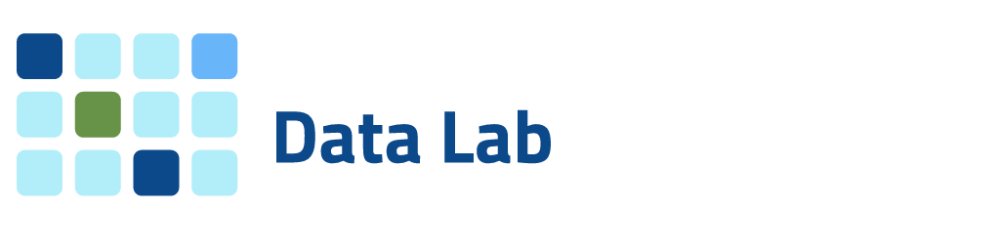
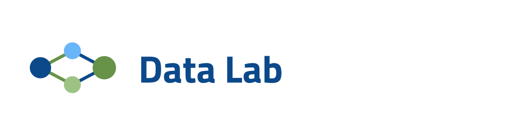

Final logo (Option B · layers)
datalab-logo.svg · light and dark PNG
Social templates (layers mark)
Archived concepts (A and C)
Not for launch use. Kept in archive/logo/ for reference.
Option A · data grid (archived)

Option C · flow network (archived)
